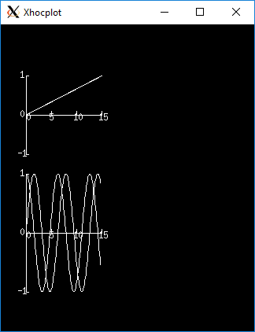

axis · graph · graphmode · plot · plotx · ploty · plt · regraph · setcolor · settext
Obsolete Plotting
Warning
The functions on this page should be considered obsolete and avoided in new code; use
Graph instead.
.fa
- graphmode()
obsolete. Use
Graphinstead.Syntax:
h.graphmode(1)Executes the list of setup statements. This is also done on the first call to
h.graph(t)after a new setup statement is added to the list.h.graphmode(-1)Flushes the stored plots. Subsequent calls to
h.graph(t)will start new lines. Should be executed just before ah.plt(-1)to ensure the entire lines are plotted.h.graphmode(2)Flushes the stored plots. Subsequent calls to
h.graph(t)will continue the lines. Graphs are normally flushed every 50 points.
- graph()
- Name:
graph — multiple line plots (obsolete; use
Graphinstead)- Syntax:
h.graph()h.graph(expression, setup)h.graph(t)h.graphmode(mode)- Description:
The
graph()function solves the problem of obtaining multiple line plots during a single run. During calls toh.graph(t), specified variables are stored and plotted using scales determined by calls toaxis().
Options:
h.graph()erases the old list and starts a new (empty) list of plot expressions and setup statements.
h.graph(s1, s2)Adds a new plot specification to the graph list. s1 must be a HOC string which contains an expression, usually a variable. e.g “y”. s2 is a HOC string which contains any number of statements used to initialize axes. etc. E.G “
axis(0,5,1,-1,1,2) axis()”.h.graph(t)The current value of each expression in the graph list is saved along with the abscissa value, t. The line plots are flushed every 50 points.
Example:
from neuron import h, gui # define a HOC variable x h('x = 0') def p(): # plot ramp h.axis(100, 300, 450, 200) h.axis(0, 15, 3, -1, 1, 2) h.axis() h.plot(1) for i in range(150): h.x = i * 0.1 h.plot(h.x, h.x / 15.) # ramp h.graph(h.x) # plots graph list if any h.graph(-1) # flush remaining part of graphs, if any h.plt(-1) p() # plots the ramp alone h.graph() h.graph("sin(x)","axis(100, 300, 100, 300) axis()") h.graph("cos(x)", "") # same axes as previous call to graph p() # plots the sin and cos along with the ramp
- Diagnostics:
The strings are parsed when
h.graph(s1, s2)is executed. The strings are executed on calls toh.graph(t).The best method for complicated plots is to make the setup string a simple call to a user defined procedure. This procedure can setup the axes, write the labels, etc. Newlines and strings within strings are possible by quoting with the
\character but generally are too confusing to be practical.Local variables in graph strings make no sense.
Note
All expressions for initialization and for plotting must be specified as HOC expressions not as Python callables. These functions are maintained solely to maintain backward compatability, so this limitation is likely to never be lifted. New code should use
Graphinstead, which does not have this limitation.Note
On some modern systems, the graph window may have to be interacted with (e.g. resized) before the first graph will appear.
See also
- axis()
Syntax:
h.axis()h.axis(clip)h.axis(xorg, xsize, yorg, ysize)h.axis(xstart, xstop, nticx, ystart, ystop, nticy)Options:
h.axis()draw axes with label values. Closes plot device.
h.axis(clip)points are not plotted if they are a factor
clipoff the axis scale. Default is no clipping. Setclipto 1 to not plot out of axis region. A value of 1.1 allows plotting slightly outside the axis boundaries.h.axis(xorg, xsize, yorg, ysize)Size and location of the plot region. (Use the h.plt() absolute coordinates.)
h.axis(xstart, xstop, nticx, ystart, ystop, nticy)Determines relative scale and origin.
Specification of the precision of axis tic labels is available by recompiling
hoc/SRC/plot.cwith#define Jaslove 1+. With this definition, the number of tics specified in the 3rd and 6th arguments ofaxis()should be of the form m.n. m is the number of tic marks, and n is the number of digits after the decimal point which are printed. This contribution was made by Stewart Jaslove.See also
- plotx()
- ploty()
- plot()
- Name:
plot - plot relative to scale given by
axis()
Syntax:
h.plot(mode)inrange = h.plot(x,y)- Description:
h.plot()plots relative to the origin and scale defined by calls toaxis(). The default x and y axes have relative units of 0 to 1 with the plot located in a 5x3.5 inch area.
Options:
h.plot()print parameter usage help lines.
h.plot(0)subsequent calls will plot points.
h.plot(1)next call will be a move, subsequent call will draw lines.
h.plot(x, y)plots a point (or vector) relative to the axis scale. Return value is 0 if the point is clipped (out of range).
h.plot(mode, x, y)
Example:
from neuron import h, gui import math # plot the sin function from 0 to 10 radians h.axis(0, 10, 5, -1, 1, 2) #/* setup scale */ h.plot(1) for i in range(101): x = i * 0.1 h.plot(x, math.sin(x)) # plot the function h.axis()

See also
- setcolor()
obsolete.
- Name:
setcolor - low level plot function
Syntax:
h.setcolor(colorval)Description:
h.setcolor()sets the color (or pen number for HP plotter) used forplt().Argument to
setcolor()produces the following screen colors with an EGA adapter (left), X11 graphics (right):0 black (pen 1 on HP plotter) black 1 blue white 2 green yellow 3 cyan red 4 red green 5 magenta blue 6 brown violet 7 light gray (pen 1 on HP plotter) cyan ... 15 white green
- plt()
- Name:
plt - low level plot function
- Syntax:
h.plt(mode)h.plt(mode, x, y)
Description:
h.plt()plots points, lines, and text using the Tektronix 4010 standard. Absolute coordinates of the lower left corner and upper right corner of the plot region are (0,0) and (1000, 780) respectively.TURBO-C graphics drivers for VGA, EGA, CGA, and Hercules are automatically selected when the first plotting command is executed. An HP7475 compatible plotter may be connected to COM1:.
Options:
h.plt(-1)Place cursor in home position.
h.plt(-2)Subsequent text printed starting at current coordinate position.
h.plt(-3)Erase screen, cursor in home position.
h.plt(-5)Open HP plotter on PC; the plotter will stay open until another
h.plt(-5)is executed.h.plt(0, x, y)Plot point.
h.plt(1, x, y)Move to point without plotting.
h.plt(2, x, y)Draw vector from former position to new position given by (x,y). (mode can be any number >= 2)
Several extra options are available for X11 graphics.
h.plt(-4, x, y)Erases area defined by previous plot position and the point, (x, y).
h.plt(-5)Fast mode. By default, the X11 server is flushed on every plot command so one can see the plot as it develops. Fast mode caches plot commands and only flushes on
plt(-1)andsetcolor(). Fast mode is three times faster than the default mode. It is most useful when plotting is the rate limiting step of the simulation.h.plt(-6)X11 server flushed on every plot call.
When the graphic window is resized, NEURON is notified after the next erase command.
Example:
from neuron import h, gui import math h.setcolor(3) # color 3 is red for X11; to use with EGA, change to 4 h.plt(1, 100, 500) h.plt(2, 100, 100) # y-axis h.plt(1, 100, 300) h.plt(2, 600, 300) # x-axis (NOTE: does not correspond to origin of sine wave) h.plt(1, 200, 550) h.plt(-2) for i in range(1001): h.plt(i + 1, i * 5, 300 + 200 * math.sin(2 * math.pi * i / 100.)) h.plt(-1) # close plot

See also
plot(),axis(),lw(),setcolor(),GraphWarning
EGA adaptor used extensively but CGA and Hercules used hardly at all.
When the X11 graphic window is killed, NEURON exits without asking about unsaved edit buffers.